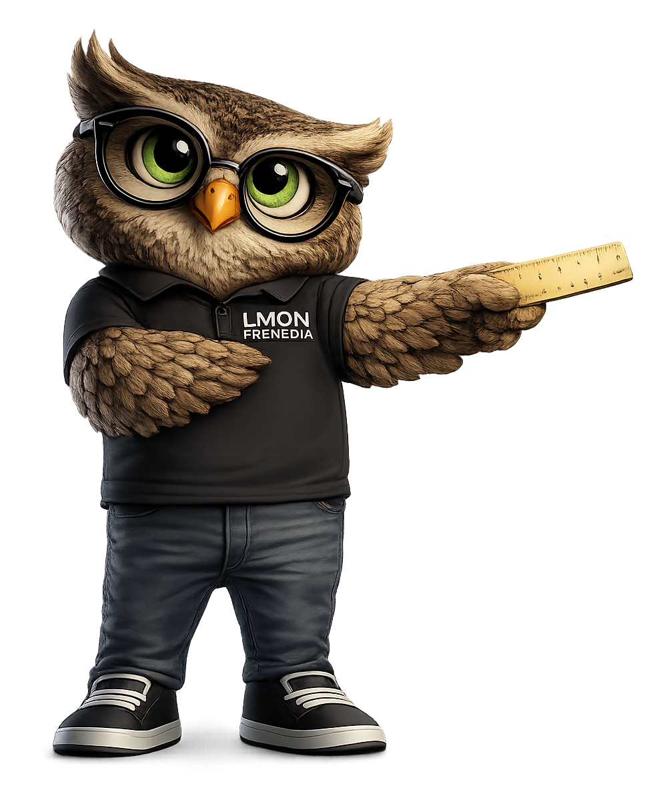

Simulator Area
✓ WITH TRAPPING
Blue trap remains fixed while artwork shifts.
✕ WITHOUT TRAPPING
White paper becomes visible due to misregistration.

🦉 OTTO TIP
Trapping is usually between 0.05 mm and 0.25 mm depending on the printing process, substrate and ink conditions.
💡 DID YOU KNOW?
- Trapping compensates for slight press misregistration.
- Lighter colours are usually spread into darker colours.
- Excessive trapping can create visible outlines.
- Modern workflows can generate trapping automatically.